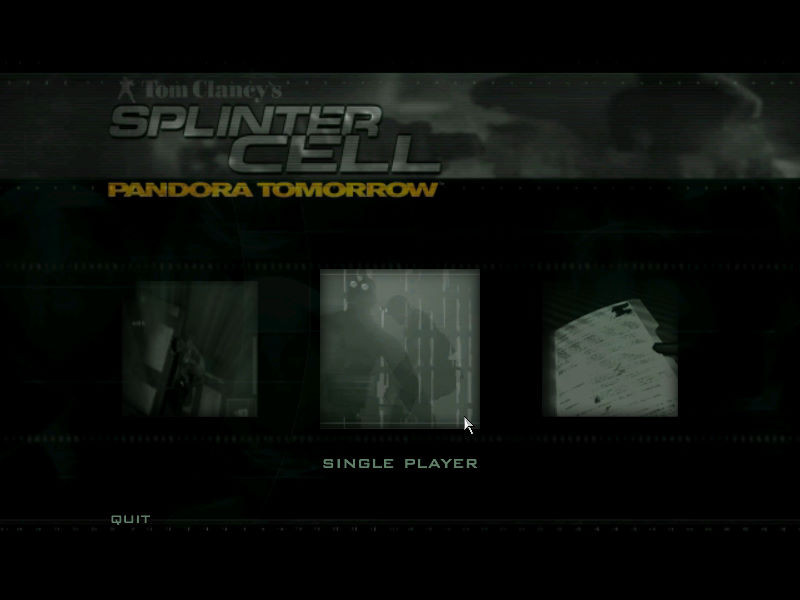
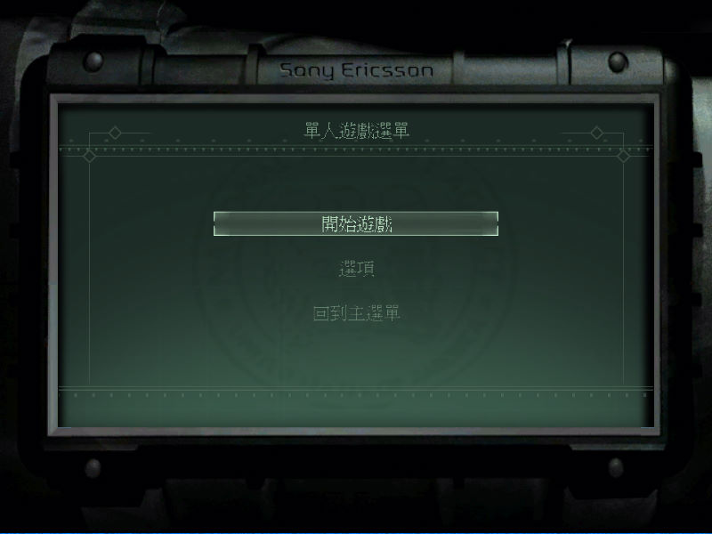
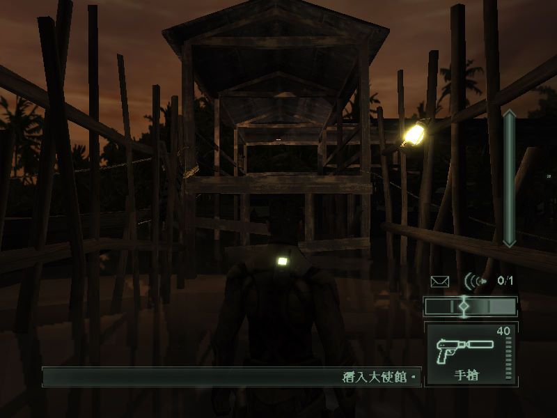

名稱：湯姆克蘭西之間諜遊戲2／縱橫諜海2／細胞分裂2：潘朶拉計畫／明日潘朶拉
(Tom Clancy's Splinter Cell: Pandora Tomorrow，中文版)
簡介：Ubisoft 2004年出品的潛行動作射擊遊戲，由松崗中文化並代理發行 [待補]。



保護：光碟SafeDisc 3.20
備註：VirtualBox無法執行，虛擬機請使用VMware。
檔案：us_scpt_multi_update1.3.1.rar = 1.31更新檔
nocd100.rar = 1.00免光碟檔
nocd131.rar = 1.31免光碟檔